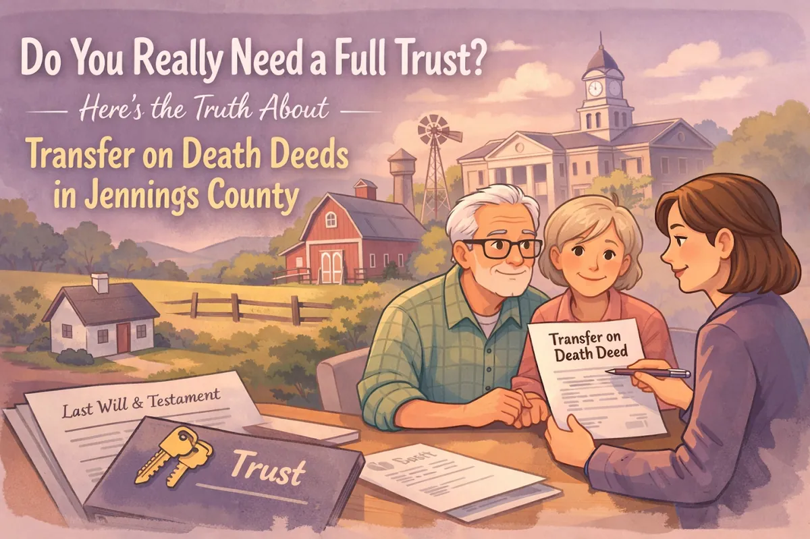
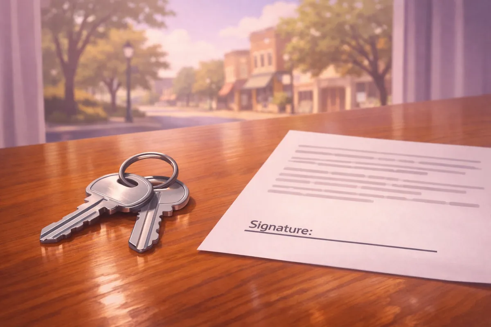

Do You Really Need a Full Trust? Here's the Truth About Transfer on Death Deeds in Jennings County

If you have spent any time sitting around a kitchen table in North Vernon, Butlerville, or Scipio discussing the future, the topic of "The Will" usually comes up. But lately, there is a lot of buzz about "Trusts." You might have heard a neighbor mention they put their house in a trust to "keep the government out of it," or perhaps you saw an ad online claiming that everyone needs a complex estate plan to survive the 2026 legal shifts.
As a lawyer in North Vernon Indiana, I hear these questions every week. People want to know: "Chris, do I really need a full-blown Living Trust, or is there a simpler way to make sure my kids get the house without a big court battle?"
The truth is, there isn't a one-size-fits-all answer. However, for many families here in Jennings County, there is a powerful tool called a Transfer on Death (TOD) Deed that often gets overlooked. It is simple, it is affordable, and for some, it is exactly what they need. For others, a Trust is the only way to go.
Let's break down the truth about these two options so you can decide what's right for your family.
What Exactly is a Transfer on Death (TOD) Deed?
Think of a Transfer on Death Deed as a "beneficiary designation" for your home or land. In Indiana, we have the Transfer on Death Property Act. This allows you to sign a deed today that says, "When I die, this property goes to [Name]." You keep total control while you're alive, and it avoids probate entirely for that piece of real estate.
It's affordable: setting up a TOD deed is significantly cheaper than building a full Revocable Living Trust.

The Contrast: What is a Revocable Living Trust?
If a TOD deed is a simple arrow pointing your house toward your kids, a Revocable Living Trust is a high-tech vault.
When you create a Trust, you aren't just naming a beneficiary. You are creating a legal entity that "holds" your assets. You are still the boss (the Trustee), but the house, your bank accounts, and your other property are technically owned by the Trust.
A Jennings County attorney will usually recommend a Trust if your situation is a bit more complex. For example:
You have minor children. You don't want a 10-year-old inheriting a farm outright. A Trust lets you name someone to manage that money until they are 25 or 30.
Incapacity planning. This is a major benefit. If you have a stroke or develop dementia, the person you named as your "Successor Trustee" can step in and manage your affairs immediately without having to go to court for a guardianship.
Privacy. While a TOD deed is a public record filed at the Jennings County Courthouse, a Trust is a private document. Nobody needs to know what you own or who is getting what.
Simplicity vs. Complexity: Which One Fits Your Life?
I always tell my clients that I am a "small town lawyer" who wears many hats. My goal isn't to sell you the most expensive package on the shelf; it's to listen to what you actually need.
For many "everyday" families in North Vernon who own a home, have some modest savings, and have adult children who get along well, a TOD deed might be all you need to keep things out of the hands of the lawyers and the courts. If your primary goal is just "making sure the kids get the house," the TOD deed is a fantastic, no-nonsense tool.
However, if you are worried about a child who struggles with debt, or if you want to make sure your spouse is taken care of but the house eventually goes to children from a previous marriage, a TOD deed is too "blunt" of an instrument. It's an all-or-nothing transfer. In those cases, the complexity of a Trust is worth the investment.
Common Misconceptions in Jennings County
"A TOD deed protects my house from the nursing home." The Truth: No, it doesn't. A TOD deed does nothing for Medicaid planning. If you go into a nursing home, the state can still put a lien on the property.
"If I have a Will, I don't need a TOD deed." The Truth: Actually, a Will requires probate. If your house is only mentioned in your Will, your family will still have to go through the Jennings County court process to get the title changed. A TOD deed happens automatically.
"Trusts are only for the wealthy folks in Indianapolis." The Truth: Not anymore. Many families right here in Vernon use trusts because they want to avoid the headache of a public court process or because they want to protect their legacy for multiple generations.
Why Local Context Matters
When you are looking for an attorney in North Vernon Indiana, you want someone who knows the local landscape. I've handled a wide variety of complex legal matters during my tenure, but at the end of the day, I'm your neighbor. I don't believe in one-size-fits-all estate planning. Some big-city firms might try to push every single client into a $5,000 trust because it's more profitable for them. That's not how I operate. If a simple deed and a solid Power of Attorney solve your problems, that's exactly what I'll tell you.
Practical Steps for North Vernon Residents
If you are trying to decide between these two, ask yourself these three questions: Who are my beneficiaries? What else do I own? What is my biggest fear?
If your fear is "the court getting involved," both options work. If your fear is "I might get sick and can't pay my bills," a Trust offers much better protection.

How We Can Help You Decide
Deciding how to protect your legacy is a big deal, but it doesn't have to be intimidating. Whether we decide on a simple Transfer on Death Deed or a comprehensive Living Trust, the peace of mind you get from knowing your affairs are in order is priceless.
Don't leave your family's future to chance. Whether you're in Hayden, Scipio, or right in the heart of North Vernon, let's make a plan that works for you. No jargon, no pressure: just honest legal advice from your local Jennings County lawyer.